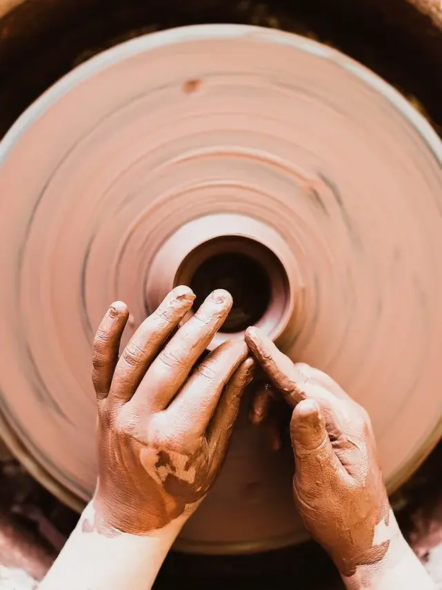
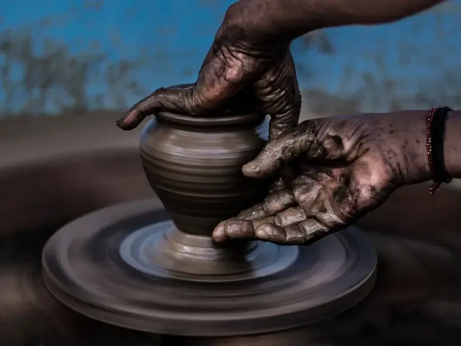
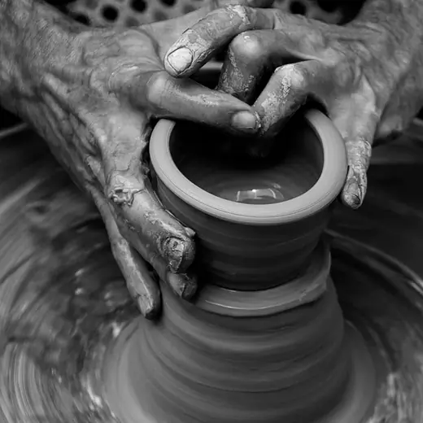
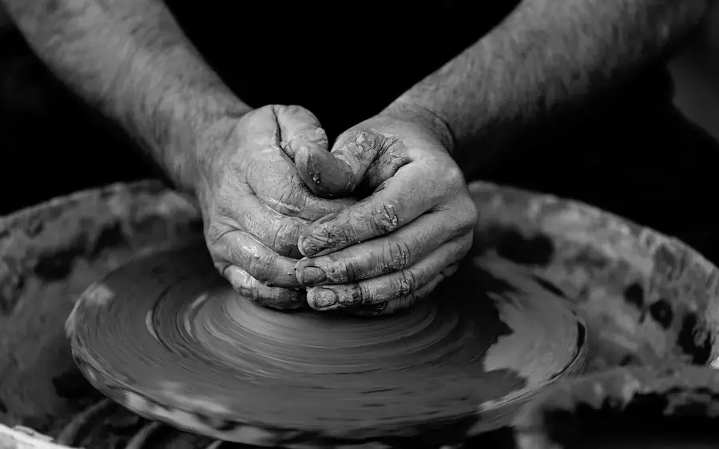
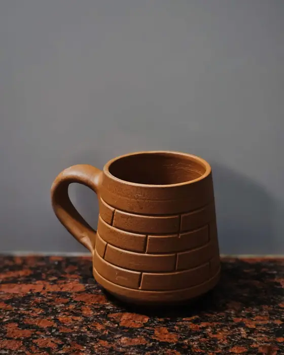

Gres torneado en series cortasCada forma sale del torno en tandas pequeñas: las que caben en una hornada, no más.
Gres · alta temperatura · Valencia



Taller de gres en Valencia
Vajilla de gres, torneada pieza a pieza
Platos, cuencos, jarras y tazas cocidos a alta temperatura, en series cortas, con un puñado de esmaltes que repetimos hornada tras hornada. Cada ficha dice cuánto mide la pieza, cuánto pesa y qué esmalte lleva.
Medidas y peso en cada fichaDiámetro, alto y gramos de la pieza ya cocida, medidos sobre la balda y no sobre el plano.
Esmaltes fijos, pocos y repetiblesTres esmaltes con receta cerrada. Lo que compras hoy se puede reponer mientras sigan en uso.
No hacemos encargos de diseño ajenoTorneamos lo que hay en esta web. Ni marca blanca, ni formas de otros, ni copias de un dibujo.
Qué torneamos
Cuatro cosas, hechas muchas veces
Platos y cuencos
Tres medidas de cada uno: el plato de pan, el plato del día y el de servir al centro; el cuenco de salsa, el de sopa y el de ensalada. Mismo gres, mismo esmalte, borde un poco vuelto para que se coja con una mano.
Los tres esmaltes van en todas las medidas; la base queda sin esmaltar y lijada para que no raye la mesa.
Medidas y esmaltes →Jarras y tazas
Torneadas con el asa tirada a mano y pegada en dureza de cuero, para que nazca del cuerpo sin escalón. La capacidad se mide con agua: hasta el borde y hasta donde de verdad se llena.
Peso pensado para la mano: pared fina arriba, pie que sostiene y asa por la que caben los dedos.
Capacidades y asas →Fuentes y bandejas de horno
Paredes gruesas y base sin esmaltar, para que el calor entre parejo desde abajo. Van del horno a la mesa y se sirven en la propia fuente.
Lo que no aguantan es salir de la nevera y entrar en un horno ya caliente: el gres agradece calentarse con el horno.
Uso con calor →Reposiciones de una serie
Mientras el esmalte siga en uso, repetimos la forma con la misma pasta y el mismo cono. Sirve para completar una serie que compraste hace tiempo o para sustituir una pieza que se cayó.
El tono puede moverse un punto respecto a la pieza antigua, y lo decimos antes de tornearla.
Pedir una reposición →
Cómo trabajamos
Del torno a tu mesa, en el orden en que pasa
Almu Gutiérrez es un taller de gres en Valencia que hace una sola cosa: vajilla de mesa torneada a mano y cocida a alta temperatura. No hay un catálogo grande ni colecciones de temporada; hay unas pocas formas que se repiten, tres esmaltes que se conocen bien y una hornada cada pocas semanas. Cada pieza se vende suelta, por unidad, con su ficha: diámetro, alto, peso y esmalte.
Un pedido empieza con un correo. Nos dices qué quieres poner en la mesa, cuántas piezas y con qué esmalte, y te contestamos con lo que hay ya cocido en la balda, lo que está en bizcocho esperando esmalte y lo que habría que tornear de cero. Si hay que tornear, decimos cuándo entra en el horno y cuándo sale. Tú confirmas la lista y el esmalte; nosotros preparamos las piezas, las revisamos una por una contra la ficha y las embalamos cada una por separado. La recogida se hace en Valencia con cita, y el envío llega a toda España y a la Unión Europea.
Trabajamos con una pasta de gres que se cuece en oxidación, en horno eléctrico, hasta la temperatura del cono seis, alrededor de mil doscientos veinte grados. A esa temperatura el gres deja de absorber agua y el esmalte se funde con el cuerpo de la pieza, que es lo que hace que un plato aguante años de fregadero. La bola de barro se pesa antes de centrarla para que dos platos de la misma serie salgan parecidos, y aun así cada uno tiene su milímetro y su punto de tono, porque los levanta una mano y no una máquina.
Lo que valoramos es fácil de decir: medidas reales, esmaltes que se pueden repetir y ninguna promesa que no se pueda cumplir dentro del horno. Por eso hay cosas que este taller no hace:
- No damos clases de torno ni organizamos talleres, ni de tarde ni de fin de semana.
- No producimos diseños de terceros ni fabricamos con marca blanca: las formas son las que ves en esta web.
- No afirmamos ninguna certificación de seguridad alimentaria. Decimos qué lleva cada esmalte y cómo se comporta, y ahí nos quedamos.
- No restauramos cerámica rota, ni la nuestra ni la de nadie.
- No prometemos que una reposición salga con el mismo tono que la pieza original: la aproximamos y avisamos.
Pruebas de esmalte
Preguntas que nos hacen
Lo que conviene saber antes de preguntar
¿Se puede meter al lavavajillas?
Sí, las piezas esmaltadas por dentro y por fuera: el gres cocido a alta temperatura no absorbe agua, así que el lavavajillas no lo hincha ni lo raja. Dos avisos. El blanco hueso, que es satinado, se marca con los cubiertos, y esas rayas grises salen con un estropajo suave. Y las fuentes con base sin esmaltar conviene secarlas bien antes de guardarlas apiladas.
¿Sirve para el horno o el microondas?
Microondas, sí, todas las piezas: no llevan metales ni lustres. Horno, solo las fuentes y bandejas pensadas para ello, metidas con el horno frío o templado y nunca recién sacadas de la nevera. Las tazas y los platos no están hechos para el horno y no los recomendamos ahí. Nada va sobre la placa ni sobre llama directa.
¿Hacen piezas por encargo?
Dentro de lo que ya torneamos, sí: una serie completa de platos, doce tazas iguales, una jarra en la medida intermedia. Lo que no hacemos es tornear formas ajenas, diseños que nos manden dibujados ni piezas para otra marca.
¿Por qué varía el tono entre piezas?
Porque el esmalte se aplica por inmersión y su grosor cambia unas décimas de un plato a otro, y porque dentro del horno no hace exactamente la misma temperatura arriba que abajo. El verde ceniza es el que más se mueve; el marrón hierro, el que menos. Dos piezas de una misma hornada se parecen mucho; dos de hornadas distintas, un poco menos.
¿Reponen una pieza rota de una serie antigua?
Si el esmalte sigue en uso, torneamos la misma forma con la misma pasta y te la enviamos con la advertencia del tono. Si el esmalte se retiró, no: no lo volvemos a mezclar para una sola pieza. Y la pieza rota no la pegamos ni la restauramos.
¿Dan clases de torno?
No. No hay clases, ni cursos de iniciación, ni talleres de fin de semana, ni visitas al torno. El taller no está abierto al público; es un sitio de trabajo con un horno dentro.
¿Envían fuera de España?
A la Unión Europea, sí, con cada pieza embalada por separado y el bulto protegido contra golpes. Fuera de la Unión Europea lo miramos caso por caso según el destino, y te lo decimos al responder a tu consulta, antes de que nada entre en el horno.

La balda caliente
Una pieza cada vez, con su ficha
Escríbenos qué quieres poner en la mesa y te decimos qué hay ya cocido, qué está por esmaltar y cuándo sale la próxima hornada. Sin catálogo que descargar: una lista corta y una respuesta por correo.
Preguntar por una piezao escribe a tienda@almugutierrez.com
Dónde y cuándo
Un correo, un horario y una ciudad
Correo
Es la única dirección del taller. Lo que se acuerda va por escrito, para que las medidas y el esmalte queden apuntados.
Horario
Leemos y contestamos el correo de lunes a viernes, de diez de la mañana a seis de la tarde.
El torno y el horno no tienen horario de visita.
Dónde
Valencia, Comunidad Valenciana. Recogida en mano en la ciudad, con cita previa.
Envíos a toda España y a la Unión Europea.